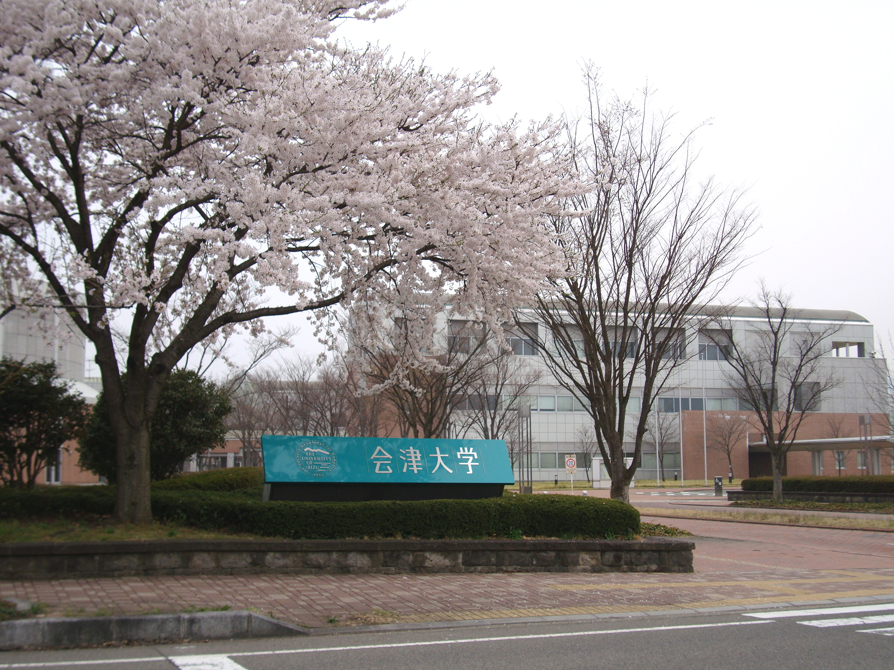
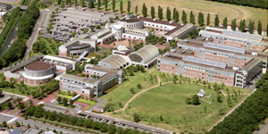
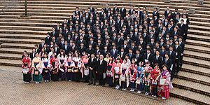
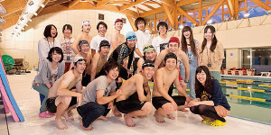
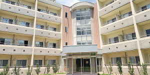
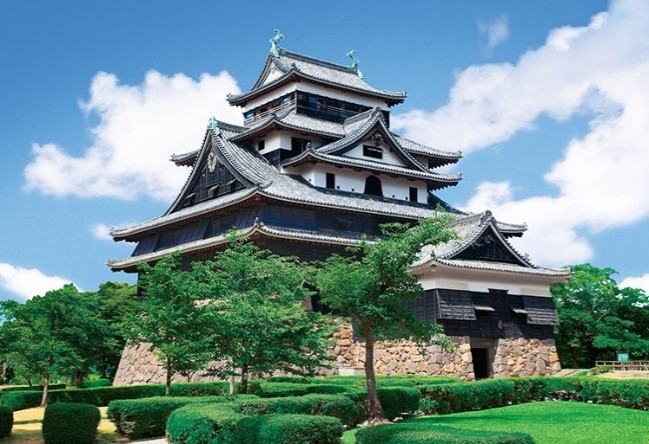
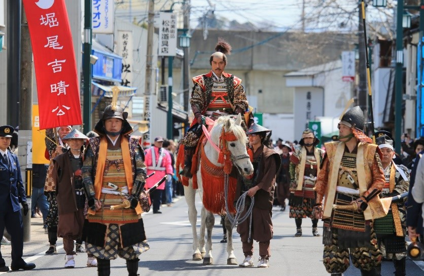
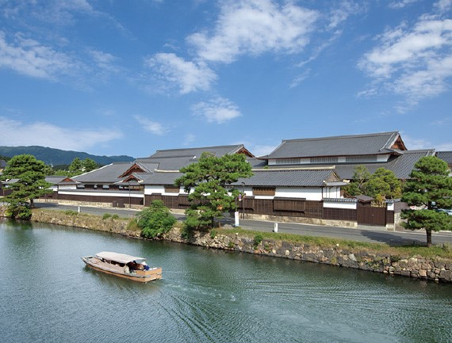
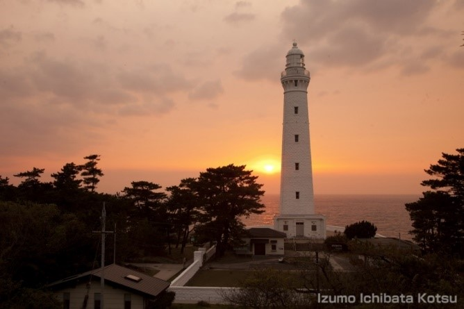

Traveling
SciSec 2022 is held by the University of Aizu.
About University of Aizu. The University of Aizu (Japanese: 会津大学, romanized: Aizu Daigaku) in Aizuwakamatsu, Japan, is the first university dedicated to computer science engineering in Japan. It has about 1,100 students enrolled in its undergraduate and graduate programs. The university's motto is "to advance knowledge for humanity" and it carries out significant research in computer science.
About Shimane. Matsue is the capital and largest city of Shimane Prefecture, with other major cities including Izumo, Hamada, and Masuda.Shimane Prefecture contains the majority of the Lake Shinji-Nakaumi metropolitan area centered on Matsue, and with a population of approximately 600,000 is Japan's second-largest metropolitan area on the Sea of Japan coast after Niigata.
    University of Aizu
   Attractions in Shimane